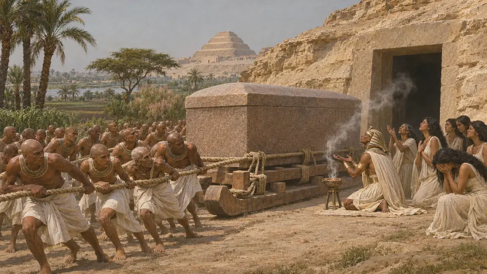
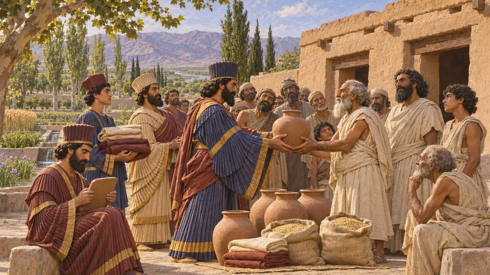
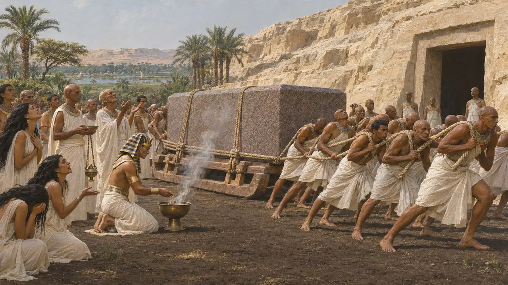
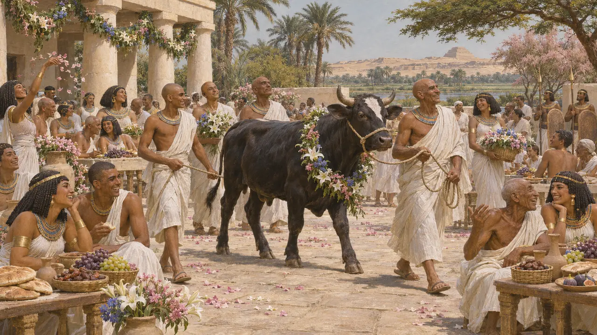
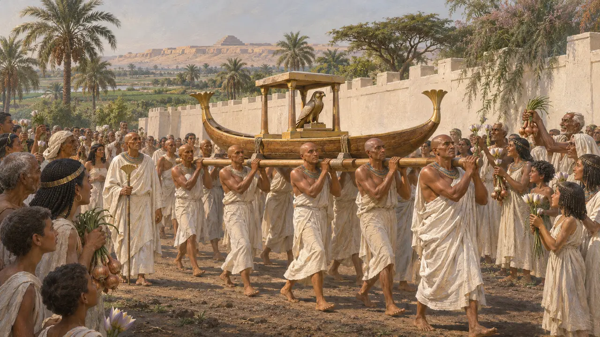

I templi d'Egitto sotto la Persia
Neith, l'Api, Amon a Hibis
I documenti egizi mostrano re persiani che agiscono da faraoni, pagano templi e seppelliscono un toro sacro. I racconti greci mostrano Cambise che lo pugnala. Gli uni e gli altri li ha scritti gente con le sue ragioni.
Nel gioco: Il tempio principale di Menfi è quello di Ptah. La guarnigione persiana ha il suo altare. Le sue feste sono quella di Sokar e quella del nuovo Api, e il suo rito è il lutto per l'Api.

Il tempio di Neith a Sais
Nelle fontiLa statua di Udjahorresnet dice che Cambise cacciò gli stranieri accampati nel tempio di Neith, gli restituì rendite e feste e vi rese culto di persona. Udjahorresnet lo scrisse per mostrare il proprio merito alla sua città, ed è l'unico testimone.
Statue of Udjahorresnet (Vatican); Posener 1936

L'Api
ContesoUn epitaffio del Serapeo mostra Cambise inginocchiato davanti all'Api sepolto nel suo sesto anno, il 524 a.C., con un sarcofago da lui donato. Erodoto dice che pugnalò l'Api alla coscia e impazzì. Polieno, molto più tardi, fa offrire a Dario 100 talenti d'oro per un nuovo Api.
Serapeum stelae (Louvre); Herodotus 3.27-29; Polyaenus 7.11.7

Amon a Hibis
Nelle fontiNell'oasi di Kharga un tempio di Amon porta i cartigli di Dario e lo mostra come faraone con gli dèi d'Egitto, una delle opere meglio conservate del periodo. Le date e quanto sia opera di Dario stesso sono discusse, ma mostra un re persiano che paga per un dio egizio lontano da ogni pubblico.
Temple of Hibis; Cruz-Uribe 1988

L'Opet, e perché qui non c'è
Nelle fontiLa grande festa egizia di Opet apparteneva a Tebe, dove Amon andava in barca a Luxor nel secondo mese della piena. Il gioco non ha Tebe, perciò Menfi tiene la sua: Sokar che fa il giro delle mura, in una data indicata dal calendario di Medinet Habu.
Medinet Habu calendar
Fonti
- Posener 1936
- Herodotus 3
- Cruz-Uribe 1988